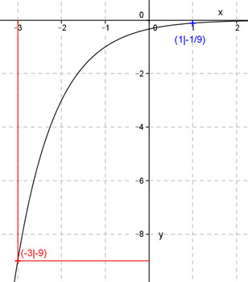

Aufgabe 15 Ergänzen Sie die Wertetabelle für den Graphen: y = -3-x-1 x -3 0 1 y -9 -1/3 -1/9 y = f(x) = -9 eingesetzt: - 9 = -3-x-1 |*(-1) 9 = 3-x-1 mit 9 = 3² 32 = 3-x-1 Exponentenvergleich: -x - 1 = 2 | +1 -x = 3 |*(-1) x = -3 f(1) = -3-1-1 f(1) = -3-2 1 1 f(1) = - --- = - --- 32 9 